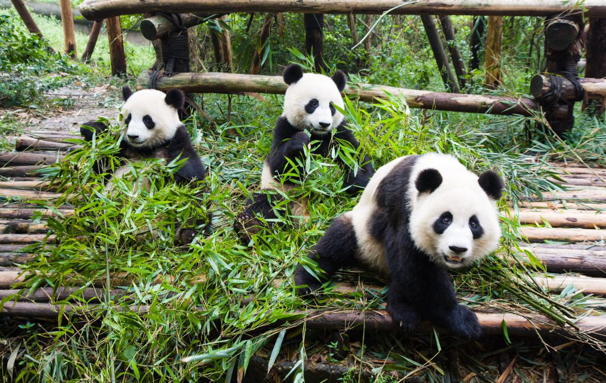
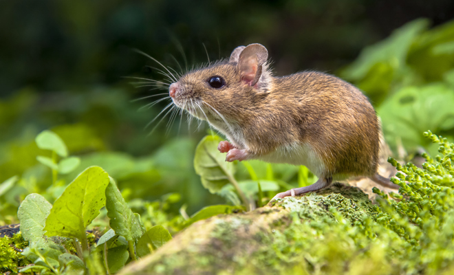

Elefante
Elephantidae
Los elefantes viven tanto en selvas como en sabanas. En las selvas tienen disponible gran cantidad de alimento proveniente de los árboles, pero se dificulta su movimiento por su gran tamaño. En esos casos pueden utilizar sus colmillos y el peso de su propio cuerpo para abrirse paso. La sabana es un ecosistema con escasez de árboles pero gran cantidad de hierbas en la estación húmeda. Sin embargo, la estación seca de la sabana implica la ausencia casi total de alimentos vegetales.
Caracteristicas
- Aunque los machos adultos de las especies más grandes suelen pesar aproximadamente 7.000 kg, el récord conocido es de 11.000 kg. Viven entre 60 y 70 años, pero algunos individuos superan los 70 años.
- Su inteligencia y comportamiento es en muchos casos similar a la de los seres humanos: son capaces de jugar, comunicarse a través de sonidos y gestos, usar herramientas, reconocerse a sí mismos, ser generosos con otros individuos de su especie e incluso pasar por períodos de duelo.
- Las piezas dentales que sobresalen de la boca del elefante suelen denominarse colmillos, pero en realidad su función es la de incisivos. Pertenecen a la mandíbula superior y crecen en forma curva a los costados de la trompa.
- Los elefantes también se caracterizan por sus grandes orejas. Estas amplias superficies están muy vascularizadas, es decir que la sangre circula por ellas para enfriarse. Una de las funciones de las orejas es la termorregulación.
- Además de los sonidos que emiten con sus trompas, denominado barritar, los elefantes son capaces además de emitir infrasonidos,es decir, sonidos no audibles para el ser humano. Estos sonidos les permiten comunicarse salvando distancias de varios kilómetros.
Leon
Panthera leo
El león es una especie adaptada a la vida de la sabana, en las planicies donde puede correr a grandes velocidades. Suelen refugiarse del sol bajo acacias y otros árboles de la región africana, en donde cazan antílopes, emús y otras especies endémicas. La mayoría de los leones de la actualidad viven en el Este y Sur de África, en donde se estima que su población no supere los mil ejemplares adultos.
Caracteristicas
- Los leones son grandes animales cuadrúpedos de color dorado o beige claro
- Sus cuerpos gráciles pueden alcanzar pesos de 160-260 kg (machos) o 120-182 kg (hembras), y rondan los tres metros de longitud, de cabeza a la punta de la cola
- Sus cuatro patas están dotadas de potentes músculos y garras filosas al extremo, con las que sujetan a sus presas. Sus poderosas mandíbulas con dientes caninos de ocho centímetros los convierten en terribles máquinas de cacería.
- Los leones pueden vivir entre 14 y 20 años, sobre todo en cautiverio. Son depredadores no domesticables, que pueden ingerir hasta 7 kilos de carne al día.
- Hembras y machos son fáciles de distinguir, ya que estos últimos poseen una enorme melena de color oscuro alrededor del cuello, que les permite mostrarse más grandes de lo que son durante los enfrentamientos con competidores.

Panda, oso panda o panda gigante
Ailuropoda melanoleuca
Su hábitat ideal son los bosques de bambú, las zonas montañosas, húmedas y frescas que le proveen alimento y refugio. Logra adaptarse al cautiverio, lo que resulta de gran importancia por la constante amenaza de extinción de esta especie como consecuencia de la pérdida de su hábitat natural.
Caracteristicas
- Se caracteriza por su pelaje blanco y manchas negras en un patrón muy distintivo: en las extremidades, espalda, y alrededor de los ojos, que le permite camuflarse en la nieve y en la selva. Su pelaje grueso (y su grasa corporal) le propicia abrigo y protección.
- En promedio tiene entre 1,2 y 1,9 metros de longitud. Su peso promedio es de 110 kg. Sus patas delanteras son más largas y muy musculosas, y le permiten trepar y defenderse.
- Pese a relacionarse con el consumo de bambú, lo cierto es que este oso es omnívoro, adapta su alimentación a las disposiciones del ambiente, y su dieta incluye carnes, plantas, frutas, huevos y bambú
- Puede consumir hasta 14 kg que se suman a otros 5 o más kg de otros alimentos por día.
- Las hembras maduran sexualmente a los cuatro años y son fértiles solamente tres días por año. Las crías a menudo nacen en pares, pero la atención de la madre (alimentación y cuidado) suele centrarse solo en una de las crías, por eso casi la mitad de los pandas salvajes mueren antes de alcanzar la madurez.

Mus musculus
Caracteristicas
Son criaturas muy adaptables, así que en general pueden vivir en casi todo el mundo excepto en aquellas regiones de climas extremos, como la Antártida y las zonas más frías cercanas al Polo Norte. Concretamente, el ratón doméstico parece ser nativo de Asia Central o la región mediterránea, pero ahora vive prácticamente en todo lugar con población humana.
- Generalmente, el cuerpo de los ratones mide menos de 12 centímetros de longitud. Los ratones son pequeños y redondeados, con una cabeza pequeña en la que se aprecia un rostro puntiagudo con largos bigotes, pequeñas orejas erectas y redondeadas y ojillos redondos. Los ratones domésticos usualmente miden de 7.5 a 10 centímetros de largo y pesan entre 40 y 45 gramos.
- Gozan de un estupendo sentido del olfato con el que pueden detectar alimentos a distancias considerables.
- Son muy activos, ágiles y enérgicos. Los que viven en estado salvaje construyen refugios o madrigueras subterráneas para protegerse de sus depredadores.
- Son un tanto sociales entre sí, pero también territoriales. Por lo general, dejan marcas de olor en los objetos para delimitar su zona de dominio.
- Su dieta es variada y, aunque son generalmente herbívoros y consumen gran cantidad de frutas, semillas y granos, también comen de vez en cuando materia vegetal.

Zorro Rojo
Vulpes vulpes
El zorro rojo es el carnívoro más ampliamente distribuido en el mundo. Habita toda Europa, Asia, Norte de África, Norte América y Oceanía. A Australia llegaron de la mano del ser humano en 1868 y se ha extendido por gran parte del continente. En América del norte, podemos encontrarlos por todo Canadá y los Estados Unidos. El zorro rojo en España habita diversas regiones, comprendiendo medios forestales y zonas de alta montaña, de hasta 3.000 metros de altitud.
Caracteristicas
- El zorro común es un mamífero relativamente pequeño, pues pesa entre 3 y 14 kilogramos.
- Su hocico es alargado, las orejas son grandes y puntiagudas, la cola es larga, casi tanto como el cuerpo. Sus patas con altas y delgadas, son buenos corredores y saltadores.
- En el zorro rojo, predominan los tonos de amarillo a marrón rojizo en la parte superior del cuerpo. Las mejillas, el mentón, la garganta y el abdomen son blancos. La cara y la zona de la grupa tienen un color ligeramente oxidado. Las patas y las puntas de las orejas son negras. Al final de la cola tienen un penacho de pelo blanco muy distintivo.
- Muestra una amplia variación en tamaño según el individuo y la zona geográfica. La longitud de la cabeza y el cuerpo en adultos puede variar de 0,45 a 0,90 metros, la longitud de la cola es de 0,30 a 0,55 metros y la masa corporal de 3 a 14 kg.
- El zorro rojo lleva una dieta muy variada, conejos, liebres, ardillas, ratones, ratas y otros pequeños mamíferos son la parte más importante de su alimentación. Ocasionalmente también consumen mustélidos, mapaches, zarigüeyas y ratas almizcleras. En ciertas áreas y en épocas concretas también pueden comer aves.

REGRESAR AL MENU